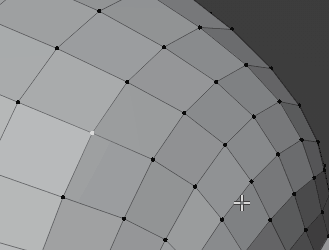
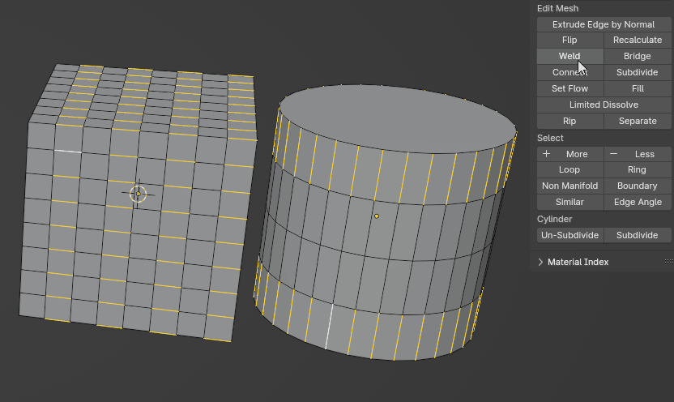
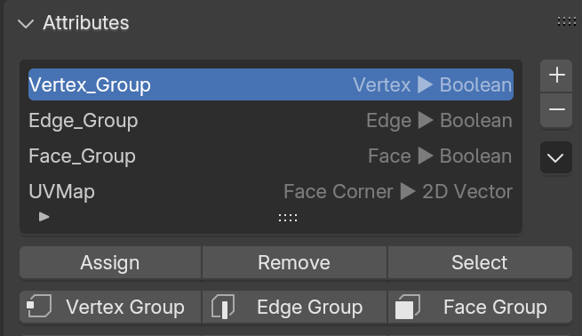

Extras
Small shortcuts that remove everyday friction.
Fast Merge & Connect
1 · Alt 1 · Shift 1Edit Mode1 merges to the nearest or active vertex, Alt 1 at center, Shift 1 connects.



Shortcuts
- Shift 1: join verts, knife with 0–1 verts, connect in edge / face mode.
- Limit guards against merging a whole mesh by accident.
Toggle in preferences: Merge/Connect
Modifier Key
Properties EditorKeyboard control of the modifier stack. Hover the Modifier tab and press a key.
Shortcuts
| Key | Action |
|---|---|
| Q / E | Move up / down (Shift to top / bottom) |
| W / S | Select previous / next |
| 1 2 3 4 | Toggle render / viewport / edit / cage |
| A · D · X | Apply · duplicate · delete |
| Tab · M | Data tab · Material tab |
Toggle in preferences: Modifier Key
Attribute Operations
Mesh Data › AttributesAssign, remove and select attributes in Edit Mode, like vertex groups.

Shortcuts
Toggle in preferences: Atributes Operations
Outliner Options
Blender 4.2–5.1Auto focus, collapse unselected collections and select children, in the Outliner filter.
Shortcuts
Toggle in preferences: Outliner Options
Legacy Shortcuts
Handy shortcuts from Blender 2.79.
Shortcuts
| Key | Where | Action |
|---|---|---|
| Alt P | Edit Mode | Poke faces |
| < / Shift < | Edit Mode, UV | Grow / shrink |
| Ctrl A · Ctrl P | UV Editor | Average scale · pack |
| Ctrl C / V | UV Editor | Copy / paste UVs |
| 1–0 | Object Mode (5.0+, optional) | Collection visibility |
Toggle in preferences: Legacy Shortcuts